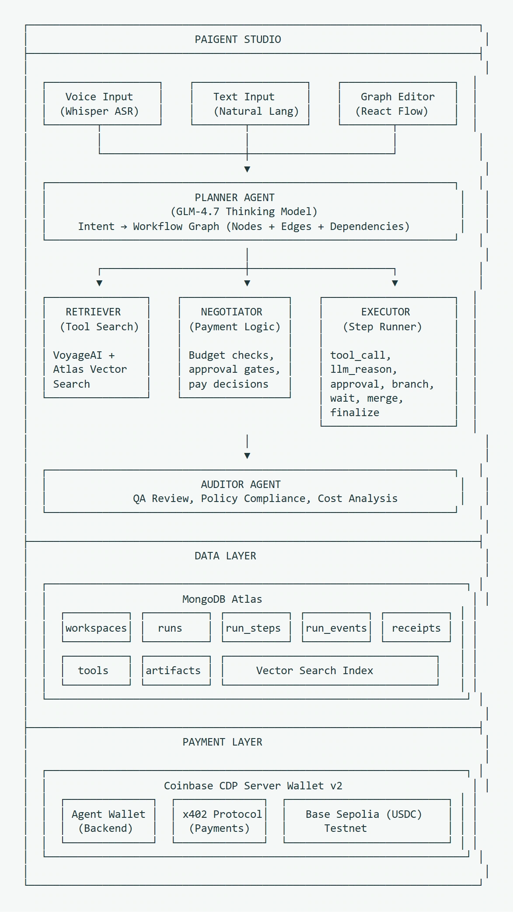

Agent orchestration
Paigent Studio
A workflow editor that turns spoken or written requests into inspectable execution graphs.
Voice or text Execution graph Approved tools
From intent to a plan
A natural-language request can leave the order of operations implicit. Paigent gives the user a graph of tasks and dependencies to inspect before execution.


How the prototype works
The planner builds the graph. Retrieval uses embeddings and MongoDB Atlas Vector Search to find tools, and the executor streams progress to the interface. Approval boundaries matter when a selected tool carries a price.
Contribution and scope
I contributed to the public project documentation. The repository describes the team’s planner, retrieval and execution components. Its x402 payment workflow is a prototype, with no production transaction-volume claim.